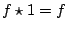
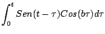
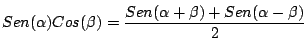
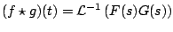
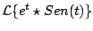
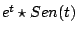
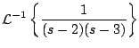

|
|
|
|
|Instituto Tecnológico de Costa Rica|Escuela de Matemática| M. Sc. Geovanni Figueroa M. |
1 2
3 4
5 6 7
8 9
10 11
12 13
14 15
16
|
|
Convolución y transformadas Como hemos visto, la transformada de Laplace es lineal, es decir, la transformada de una suma es la suma de las transformadas, entonces cabe preguntarse si se tiene algo similar para el producto, la respuesta es no. En general la transformada no conmuta con la multiplicación ordinaria, o sea, la transformada de un producto no es el producto de las transformadas, pero podemos definir un nuevo producto generalizado bajo el cual esto es cierto.
La convolución tiene muchas de las propiedades de la multiplicación ordinaria, como veremos en el siguiente teorema.
Demostración
La demostración de estas propiedades es muy simple. Haremos la primera de ellas y dejamos las restantes al lector.
Observación: sin embargo, existen algunas propiedades de la multiplicación ordinaria que la convolución no tiene. Por ejemplo, no es cierto en general que ; para ver esto, note que
Ejemplo
Solución
Ejemplo
Solución
Observación: para calcular la integral

del ejemplo anterior, hemos usado la identidad

Otras identidades que pueden ser útiles en el cálculo de integrales similares son
El siguiente teorema establece un resultado de mucha importancia teórica y práctica, como veremos.
Observación: La forma inversa del teorema de convolución

es muy importante en la solución de ecuaciones diferenciales, pues nos puede evitar el cálculo de fraciones parciales complejas.
Ejemplo

Solución
Observación: como ya hemos calculado  podemos corroborar el resultado obtenido anteriormente
como obtuvimos en el ejemplo anterior. Los siguientes ejemplos muestran el uso de la forma inversa del teorema de convolución para el cálculo de transformadas inversas.
Ejemplo

Solución
Observación: en este ejemplo el uso de fraciones parciales resulta viable, pues
Los siguientes ejemplos muestran situaciones donde el uso de fraciones parciales puede ser realmente complejo, comparado con el uso del teorema de convolución.
Ejemplo

Solución
Observación: en este ejemplo la expansión en fraciones parciales no es tan simple
Ejemplo
Solución
El siguiente corolario es útil en el cálculo de la transformada de una integral.
Demostración
Ejemplo
Solución
|